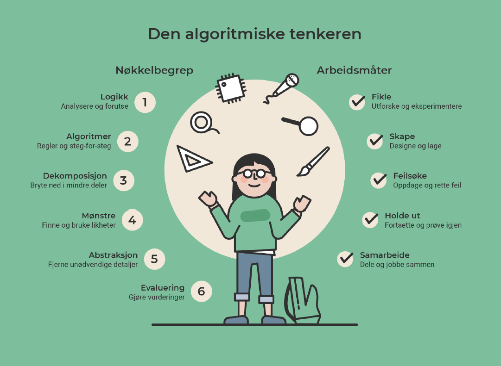

Koden tar oppmerksomheten fra matematikken
Elever kan bruke hele timen på å få noe til å virke. Gjør det matematiske målet eksplisitt, og be elevene forklare resultater og mønstre underveis.
FAGSTOFF · NORSK SKOLE · LK20
Hvordan kan koding, algoritmisk tenkning og utforsking styrke matematikkundervisningen? Her finner du faglige forklaringer, konkrete eksempler og et forskningsbasert utgangspunkt for undervisningen.
Programmering handler ikke bare om å lære et programmeringsspråk. I skolen er det også en måte å utforske sammenhenger, lage modeller, løse problemer og forstå digitale systemer på.
Med fagfornyelsen (LK20) ble programmering og algoritmisk tenkning tydeligere integrert i flere fag. I matematikk er programmering særlig knyttet til utforsking, problemløsning, mønstre, geometri, data og simulering. Det finnes også programmeringsrelaterte mål i blant annet naturfag, kunst og håndverk og musikk. [1] [2]
Lage, følge og begrunne trinnvise instruksjoner, blant annet i lek, spill og arbeid med koordinater.
Beskrive og lage algoritmer; møte variabler, vilkår og løkker og begynne å programmere dem.
Utforske geometriske figurer, mønstre, funksjoner, tabeller og datasett med programmering.
Utvikle og forbedre algoritmer, simulere tilfeldige forsøk og undersøke matematiske egenskaper og sammenhenger.
Oversikten er en pedagogisk sammenfatning av LK20-oversikten i opplastet undervisningsmateriell, ikke en ordrett gjengivelse av kompetansemål. Sjekk Utdanningsdirektoratets læreplan i matematikk ↗ når du planlegger undervisning eller vurdering. [2]
Vi kan forstå programmeringskompetanse som evnen til å bruke programmering for å formulere, utvikle, teste, vurdere og formidle løsninger. Å kunne skrive riktig kode er bare én del av denne kompetansen.
Dette er en didaktisk arbeidsdefinisjon – ikke et direkte sitat fra LK20. Den bygger på vektleggingen av problemløsning, planlegging og testing i undervisningsmaterialet. [2]
Algoritmisk tenkning (computational thinking) innebærer å utforske hvordan et problem kan beskrives, brytes ned og løses gjennom presise steg – med eller uten datamaskin.
I figuren «Den algoritmiske tenkeren» kobles faglige begreper som logikk, dekomposisjon og abstraksjon til arbeidsmåter som å skape, feilsøke, holde ut og samarbeide. Dette viser hvorfor algoritmisk tenkning også handler om arbeidsprosess og utholdenhet. [5]
Del et stort problem i mindre deler som kan løses hver for seg.
Se etter gjentakelser og strukturer som kan gjenbrukes.
Velg ut det som betyr noe, og se bort fra unødvendige detaljer.
Lag en presis framgangsmåte. Test den, oppdag feil og forbedre.

Elevene deler løypen opp i etapper, finner et mønster i bevegelsene, beskriver en sekvens av kommandoer og tester om roboten kommer fram. Hvis den stopper feil, undersøker de hvorfor – og endrer algoritmen.
Et slikt problem kan begynne med piler på papir, løses med Bee-Bot eller programmeres med blokker. Selve tenkningen er viktigere enn verktøyet.
Algoritmisk tenkning er ikke identisk med programmering: Man kan tenke algoritmisk helt uten kode. Programmering gjør det mulig å la en maskin utføre og teste algoritmen.
I matematikk kan programmering fungere på minst to måter: Elevene kan lære programmeringsbegreper, og de kan bruke programmering som et redskap for å utforske matematikk. God undervisning gjør koblingen mellom disse måtene tydelig. [2]
Elevene lager en løkke som gjentar en handling. De lærer syntaks, logikk og kontrollstrukturer.
Elevene bruker løkker for å tegne et kvadrat, endrer antall sider og undersøker sammenhengen mellom sideantall og dreievinkel.
Å få figuren til å bevege seg er ikke nok i seg selv. Be elevene forutsi hva som skjer når en variabel endres, begrunne hvorfor, teste i programmet og forklare avvik. Da blir koding et middel til matematisk resonnering.
Analog, blokkbasert og tekstbasert programmering er nyttige undervisningsformer. De bør ikke ses som en helt rigid aldersstige: Valget avhenger av målet, elevgruppen og hva elevene skal undersøke.
Elevene arbeider med algoritmer uten at en datamaskin utfører instruksjonene. De kan bruke piler, kort, papir, rutenett, bevegelse og rollespill. En medelev kan «være robot» og utføre en nøye beskrevet kommando.
I Scratch eller MakeCode setter elevene sammen visuelle kodeblokker som representerer hendelser, bevegelser, løkker og vilkår. Blokkene reduserer mange rene skrive- og syntaksfeil, slik at elevene kan fokusere på programmets logikk.
I Python skrives instruksjonene som tekst. Dette gir fleksibilitet til å lage beregninger, simuleringer, funksjoner, datasett og større modeller. Elevene må samtidig lære syntaks og feilmeldinger.
for side in range(4):
forward(100)
right(90)Bee-Bot styres med fysiske knapper og er en programmerbar robot, ikke helt «analog» i streng forstand. Den kan likevel brukes skjermfritt og kombineres fint med analoge algoritmekort. super:bit er et fysisk robot- og mikrokontrollersystem; det programmeres ofte med blokker i MakeCode og kan også kobles til mer tekstbasert arbeid.
Her er eksempler på verktøy som kan brukes i norsk skole. Skoler har ulike ressurser og valg – dette er ikke en obligatorisk eller uttømmende liste.
| Verktøy | Arbeidsform | Typisk matematisk aktivitet |
|---|---|---|
| Papir, pilkort, rutematteUten teknologi | Analog | Instruksjoner, koordinater, orientering, systematisk feilsøking. |
| Bee-Bot / Blue-BotFysiske roboter | Skjermfritt / robot | Ruter, retning, lengde, sekvenser, forutsigelser. |
| ScratchJrVisuelle blokker for yngre | Blokk | Enkle sekvenser, fortellinger, bevegelser og mønstre. |
| Scratchscratch.mit.edu ↗ | Blokk | Koordinater, vinkler, figurer, variabler og spill. |
| micro:bit / super:bitSensorer og kjøretøy | Blokk / fysisk | Måling, fart, avstand, data og styring. |
| Microsoft MakeCodemakecode.microbit.org ↗ | Blokk / tekst | Programmere micro:bit med blokker og utforske sensordata. |
| Python i Thonnythonny.org ↗ | Tekst | Variabler, beregninger, algoritmer, tilfeldige forsøk. |
| PyCharm (Python)jetbrains.com/pycharm ↗ | Tekst | Utviklingsmiljø for Python, større prosjekter, feilsøking, funksjoner og simuleringer. |
| Trinket (Python i nettleseren)trinket.io ↗ | Tekst / nettleser | Kjøre og dele korte Python-programmer, tegne med Turtle og utforske matematikk uten lokal installasjon (avhengig av tilgjengelig oppsett). |
| Python TurtleModul i Python | Tekst | Vinkler, polygoner, geometriske mønstre og koordinater. |
Lærer bør avklare personvern, tilgang, installasjon og lokale retningslinjer før elevene oppretter kontoer eller bruker eksterne tjenester.
Et fungerende program er ikke nødvendigvis det samme som matematisk læring. Mange utfordringer handler derfor om hvordan undervisningen organiseres, ikke bare hvilket verktøy som velges.
Elever kan bruke hele timen på å få noe til å virke. Gjør det matematiske målet eksplisitt, og be elevene forklare resultater og mønstre underveis.
Noen er vant til å kode, andre møter blokkene for første gang. Bruk lav inngangsterskel, delmål, ulike løsningsveier og ekstra utfordringer.
Ren prøving kan bli tilfeldig. Stopp opp og spør: «Hva tror du skjer? Hvorfor? Hva bør vi teste nå?» Når elevene får tydelige mål og tid til å forklare, kan feilsøking bli en del av den matematiske utforskingen.
Sluttproduktet viser ikke alltid tankeprosessen. Vurder også elevens plan, begrunnelser, samarbeid, feilsøking og evne til å overføre idéer.
Tekniske problemer og usikkerhet kan spise av tiden. Prøv verktøyet på forhånd, ha en skjermfri reserveoppgave og planlegg tydelige matematiske mål.
PRIMM kan brukes til å strukturere elevenes arbeid med programmeringsoppgaver. I stedet for å begynne med et tomt program, tar elevene først utgangspunkt i en kort kode som allerede finnes. Deretter arbeider de seg gradvis fra forståelse til selvstendig programmering. Bokstavene står for Predict, Run, Investigate, Modify, Make. [4]
Les koden og diskuter hva dere tror vil skje, før programmet kjøres.
Kjør programmet. Sammenlign resultatet med det dere forventet.
Forklar hva de viktigste delene av koden gjør. Hvilken matematikk ligger bak?
Endre en eller flere deler av koden. Forutsi og test effekten av endringene.
Bruk ideene til å lage et eget program som løser en beslektet oppgave.
PRIMM er ett mulig rammeverk – ikke en obligatorisk rekkefølge for alle oppgaver. Ressurser og undervisningsmateriell: PRIMM – support for teaching programming in school ↗ [4]
Programmeringsoppgaver kan gi rom for skaperglede, samarbeid og problemløsing. En systematisk forskningsoversikt om kodeleker i barnehagen fremhever hvordan lærere kan støtte utforsking gjennom samarbeid, veiledning og muligheter til å prøve og feile. Dette er relevant som didaktisk inspirasjon, men funnene kan ikke uten videre overføres til alle matematikkklasserom. [3]
Gi elevene valgmuligheter innenfor et tydelig matematisk mål: et spill, en figur eller en robotløype. La dem sette preg på produktet, samtidig som de må forklare den matematiske ideen.
Del opp utfordringen i små, testbare steg. Marker at feilsøking og forbedring er framgang, ikke nederlag.
La to elever planlegge, forklare og teste sammen. Sørg for at begge bytter på å styre og begrunne.
Spør «Hva forventer du?», «Hva endret seg?» og «Hvordan vet du det?». Legg til rette for at elevene diskuterer resultatene og begrunner valgene sine.
Elevene kan simulere terningkast, undersøke vinkler eller utforske et mønster. Be dem sammenligne med forventninger fra matematikken.
La elevene beskrive strategiene sine: Hva forsøkte de først, hvordan oppdaget de en feil, og hva ville de gjort annerledes neste gang?
Forskningsmerknad: Pollarolo mfl. (2024) oppsummerer studier av kodeleker i barnehagen, ikke effekten av programmering på matematikkresultater i norsk grunnskole. Rådene på denne siden er derfor didaktiske forslag som bør prøves og vurderes i lys av elevgruppens behov. [3]
Her finner du kildene som er beholdt fra den opprinnelige listen, supplert med PRIMM-materiell og Utdanningsdirektoratets figur om algoritmisk tenkning. De opprinnelige kildene 1, 2 og 5 er beholdt; listen er nummerert på nytt for å samsvare med henvisningene i teksten.
Denne siden er en innføring i didaktiske perspektiver, ikke en systematisk forskningsoversikt. Undervisningsmateriell, faglige ressurser og forskningsartikler har ulike formål og dokumentasjonsgrunnlag.
FRA TEORI TIL HANDLING
Start med en analog algoritme, bygg videre med Scratch eller prøv den samme ideen i Python.